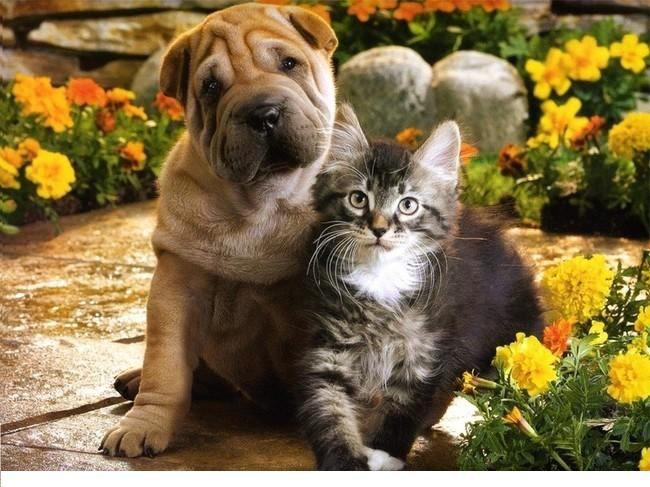
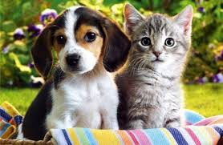
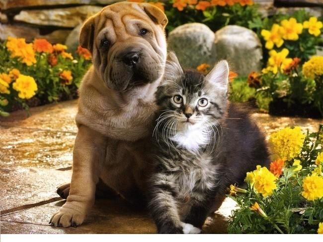
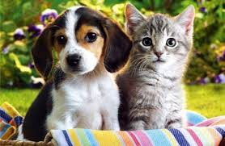

Ayudanos a ayudarlos!

 



La Fundación Patitas de Corazon fue constituida el 10 de diciembre del 2014 y abrimos las puertas, el 23 de diciembre del 2014. Somos una organización sin ánimo de lucro, que buscamos reducir la presencia de animales desprotegidos en la ciudad, a través de campañas estructuradas de esterilización y concienciación de los habitantes de la zona. Protegemos animales en difíciles condiciones y les damos resguardo, alimentación y afecto, mientras les conseguimos un hogar digno para vivir. El objeto social de la Fundación es desarrollar campañas masivas de esterilización a bajos costos, dirigidas a caninos y felinos de bajos estratos, con el fin de disminuir la super población animal, el maltrato, el abandono y el abuso contra los animales. Nuestro CENTRO DE ADOPCION no recibe ayudas ni subsidios del estado y para poder cubrir las necesidades de los animales que tenemos en proceso de recuperación solo se hace gracias a los aportes de personas como tú , protectoras de los animales.